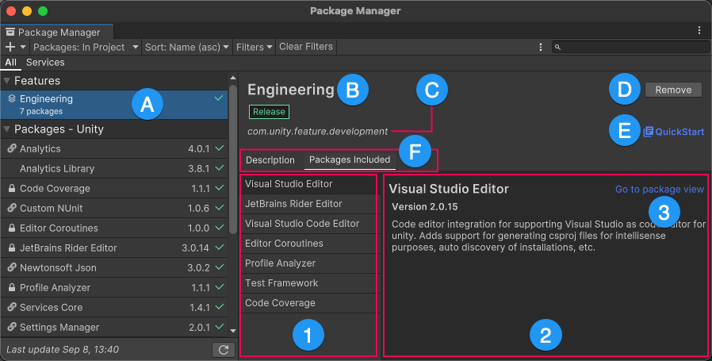

In the Package Manager window, when you select a feature setA feature set is a collection of related packages that you can use to achieve specific results in the Unity Editor. You can manage feature sets directly in Unity’s Package Manager. More info See in Glossary from the list on the left, the pane on the right displays details of the selected feature set. The details pane presents the contents of the feature set as a kind of miniature Package Manager window:

For a feature set, the details pane shows a brief description, a link to the QuickStart guide, and a list of included packages
(A) When you select a feature set from the list view, its information appears in the details pane.
(B) The display name of the feature set.
(C) The name of the feature set.
(D) A button to Install or Remove the feature set.
(E) A link to the QuickStart guide for this feature set, containing details of how you can use this set of packages together.
(F) Feature set details tabs:
Description: A brief overview of the feature set’s purpose.
Packages included: This tab displays the following information:
The list of included packages.
The details of the selected package. The information shown includes the name of the package, the recommended or installed version for the feature set, and its description.
A shortcut to load the package in the Package Manager window (replacing the feature set in the packages list and details view). When you access details from the package directly, the Package Manager provides more information than when you access them from inside the feature set (for example, the dependencies information or any samples a package contains).
Package version overrides
Feature sets are collections of packages that work well together for a specific version of Unity, which means the Package Manager installs specific package versions that your feature set requires. However, there are a couple of reasons why the Package Manager might actually install a different version (override the requested version):
Another package or feature set required a different version of the same package and the Package Manager resolved the package version by overriding it. In this case, the Reset button is disabled because the Package Manager determined the best version to install.
You requested a different package version and it didn’t conflict with the version that the feature set requires. In this case, you can click the Reset button to return to the version that the feature set requires (recommended).
Note: The Reset button displays only when the major or minor number in the package version changes. The Reset button doesn’t display when the patch number in the package version changes. For more information on semantic version schemes, see Versioning.
If the Package Manager installs a different version for any reason, an information message explains the reason for the change.
Package Manager’s feature sets added in Unity 2021.2NewIn20212